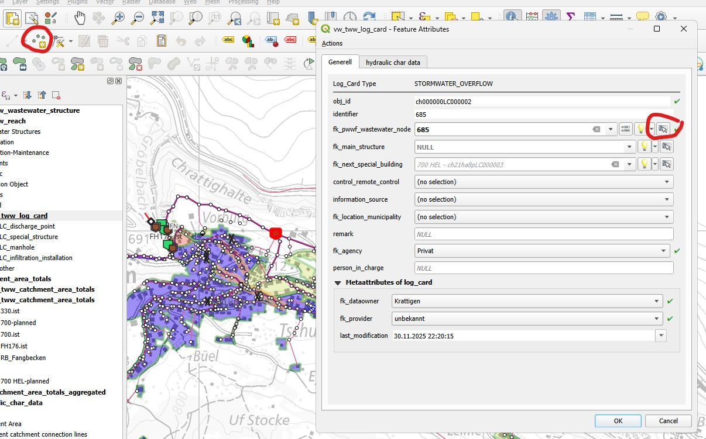
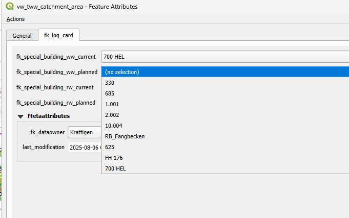
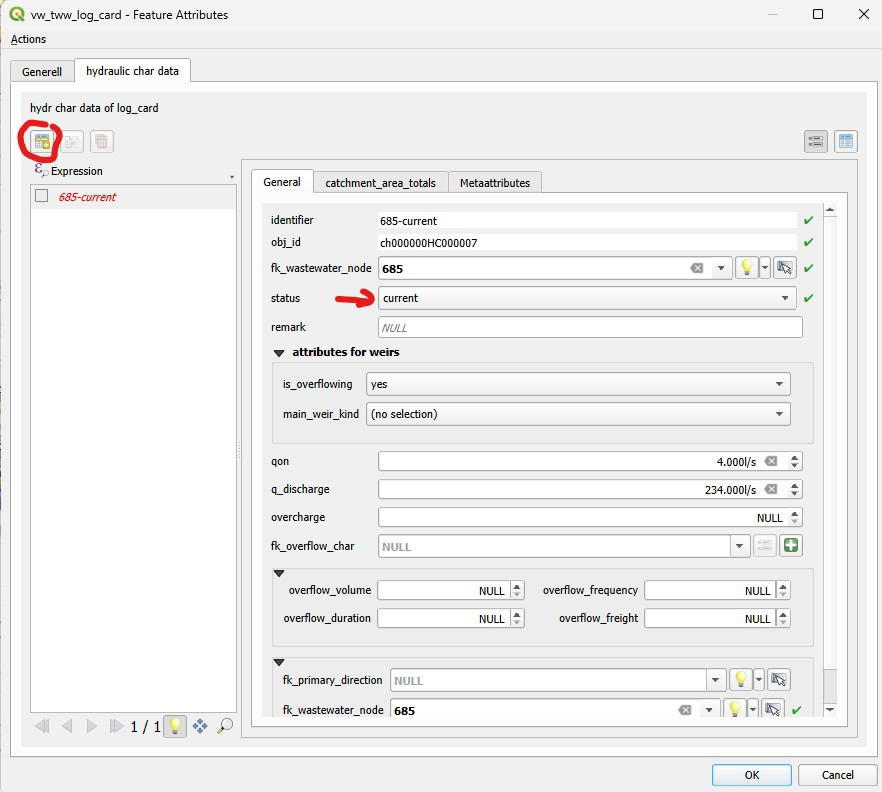
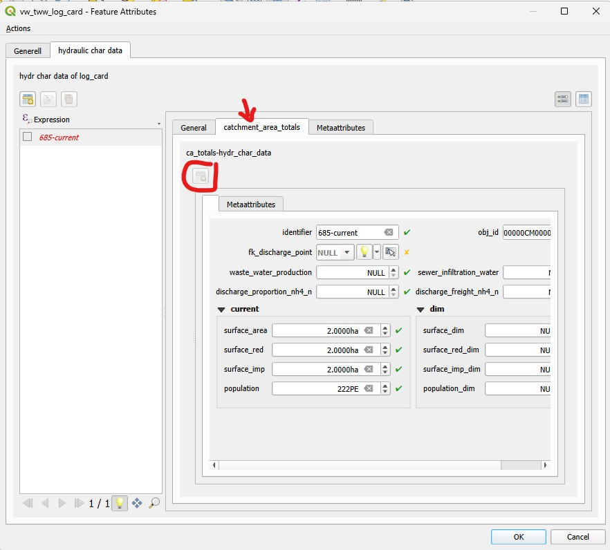

Ajout et édition d’événements de maintenance « Log Cards »
Ajouté dans la version 2025.0.
Ceci constitue un guide expliquant comment ajouter ou modifier des données de fiches de journal « Log Cards » dans TWW.
Création / modification des fiches synthétiques (log_cards)
Ajoutez un nouvel enregistrement ponctuel dans la couche vw_tww_log_card en cliquant n’importe où sur la carte avec l’outil QGIS « Ajouter une entité ponctuelle ».
Sélectionnez le regard (wastewater_node) de la fiche synthétique sur la carte.
Ne tentez pas de modifier l’identifiant de la fiche synthétique (log_card) : l’identifiant sera défini par défaut comme identique à celui du regard (wastewater_node).
Sélectionnez fk_agency (obligatoire, car cette valeur est obligatoire dans DSS-mini).
Cliquez sur OK.

Connecter le bassin versant (catchment_area) à la fiche synthétique (log_card)
La base de données est maintenant prête à connecter les enregistrements de catchment_area à la fiche synthétique (log_card). Dans vw_tww_catchment_area.fk_special_building_*, les log_cards appartenant à un special_structure sont sélectionnables. Utilisez le multiedit ou le calculateur de champs pour modifier les champs fk_special_building.

Contrôlez les catchment_area connectés dans la couche vw_tww_catchment_area_totals (polygone)
Les catchment_area connectés via fk_special_building_ww_current s’affichent dans la couche vw_tww_catchment_area_totals (polygone) après avoir cliqué sur le bouton TWW-SQL (Refresh network topology / Actualiser la topologie du réseau). Les champs de cette couche (population, surface_area,…) ne sont pas calculés automatiquement dans la version actuelle (2025.0.2). Utilisez les fonctions statistiques pour obtenir les valeurs nécessaires. Dans la version 2025.0.2, il n’y a pas de visualisation des autres connexions (fk_special_building_ww_planned ou fk_special_building_rw_current/planned).
Modifier hydraulic_char_data
Pour modifier hydraulic_char_data, modifiez à nouveau l’enregistrement dans la couche vw_tww_log_card. Dans l’onglet Hydraulic char data, ajoutez un nouvel enregistrement et choisissez un statut. L’identifiant de hydraulic_char_record est défini automatiquement sur l’identifiant du statut du log_card (problème : si l’identifiant du wastewater_node est trop long → l’identifiant du log_card est long → hydraulic_char_data est trop long !).
Les champs modifiables dépendent de la fonction de l’ouvrage spécial (special_structure) : les attributs de pompe ne sont visibles que pour les pompes, les attributs de déversoir (overflow_results également) ne sont visibles que pour les ouvrages spéciaux avec déversement.

Modifier catchment_area_totals
Les catchment_area_totals sont également modifiés dans l’enregistrement de la couche vw_tww_log_card. Sélectionnez les hydraulic char data, utilisez l’onglet catchment_area_totals et ajoutez un nouvel enregistrement. L’identifiant doit être défini sur l’identifiant du hydraulic_char_data. Les valeurs doivent actuellement être saisies manuellement (2025.02).
